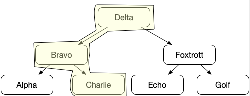

{% extends "../_base_template.html" %}
{% block title %}Lektion 17 - Bäume{% endblock %}

{% block sections %}
<section data-markdown>
<textarea data-template>
<i class="fas fa-graduation-cap"></i> Lektion 17 - Binäre Suchbäume
=============================

**Ziele:**

* Sie kennen den "Binären Suchbaum" als Anwendung von Bäumen
* Sie können einen binären Suchbaum programmatisch aufbauen
* Sie können eine geordnete Liste in einen balancierten Baum überführen
* Sie können eine Suchfunktion für Daten im binärem Suchbaum programmieren

</textarea>
</section>

<section data-markdown>
<textarea data-template>
<i class="fas fa-graduation-cap"></i> Binäre Suchbäume
=============================

Wir haben letztes Mal die Anwendung von Bäumen angesehen:

* Bäume manuell "verknüpfen"
* Bäume traversieren, Elemente prozessieren

Was uns noch fehlt, ist das programmatische Aufbauen eines Baumes: In der Praxis werden wir Bäume natürlich nicht
manuell verknüpfen.
</textarea>
</section>

<section data-markdown>
<textarea data-template>
<i class="fas fa-graduation-cap"></i> Binäre Suchbäume
=============================

**Anwendung: Binäre Suchbäume**

Wir haben letztes Mal gesehen, dass das Durchsuchen eines (balancierten) Baumes sehr effizient ist:



Suchen wir den Begriff **"Charlie"**, müssen wir genau **3** Vergleiche anstellen. Diese Performance wird noch deutlicher bei grossen
Bäumen:

<div style="display: flex;">

<div>
<p>
Die Suche nach dem Knoten mit dem Wert **19** braucht **nur 2 Vergleiche mehr (5)**, der Baum hat aber *4 mal mehr Knoten!*
</p>
<p>
In einem <strong>balancierten binären Suchbaum</strong> benötigen wir somit maximal <strong>$log_2(n+1)$ Vergleiche</strong> (n = Anzahl Nodes), um einen Wert zu finden!
Rechnen Sie aus: Bei einem Baum mit <strong>4 Milliarden Knoten</strong> benötigen Sie gerade mal <strong>33 Vergleiche!</strong>
</p>
</div>
</div>

</textarea>
</section>

<section data-markdown>
<textarea data-template>
<i class="fas fa-graduation-cap"></i> Binäre Suchbäume - Aufbau von Bäumen
=============================

**Aufbau von binären Bäumen**

Um eine binäre Suche durchzuführen, müssen wir also erst einen binären Suchbaum **aufbauen**.

Ziel ist, dass wir eine **Liste** in einen Baum überführen:

<p><code>["Alpha", "Bravo", "Charlie", "Delta", "Echo", "Foxtrott", "Golf"]</code> <i class="far fa-hand-point-right"></i> </p>

** Was benötigen wir dazu?**

* eine Liste: Unsere Daten kommen in Listenform (z.B. als Ergebnis einer Datenbankabfrage)
* eine Baumstruktur (das kennen wir schon)
* eine Methode, um die Liste in einen Baum zu überführen

** Wie gehen Sie vor?**

<i class="far fa-hand-point-right"></i> Brainstormen Sie gemeinsam! Ich möchte einen "Pseudo-Code-Algorithmus" sehen!

</textarea>
</section>

<section data-markdown>
<textarea data-template>
<i class="fas fa-graduation-cap"></i> Binäre Suchbäume - Aufbau von Bäumen
=============================

**Vorschlag: naiver Ansatz mit add()-Methode**

Wir versuchen einen naiven Ansatz: Unser Wurzelement stellt eine **add()**-Methode zur Verfügung, welche
unseren Baum aufbauen soll:

```java
// Das kennen wir schon:
class TreeNode {
    public TreeNode left;
    public TreeNode right;
    public String data;

    public TreeNode(String data, TreeNode left, TreeNode right) {
        this.data = data; this.left = left; this.right = right;
    }

    // das ist neu:
    // Methode, um einen neuen Wert im (Teil-)Baum einzufügen:
	public TreeNode add(String data) {
		TreeNode node = new TreeNode(data, null, null);
		/// ..... hängt das neue Element in den Baum ein, und gibt die TreeNode zurück
		return node;
	}
}

public class Main {
	public static void main(String[] args) {
        // Voraussetzung: Sortierte Liste
        String[] texte = {"Alpha", "Bravo", "Charlie", "Delta", "Echo", "Foxtrott", "Golf"};

		// Wurzelknoten erzeugen:
		TreeNode wurzel = new TreeNode(texte[0], null,null);
        // Nun fügen wir alle Texte als neue Knoten ein:
		for (int i = 1; i< texte.length; i++) {
			wurzel.add(texte[i]);
		}
	}
}
```

** Implementieren Sie die Add-Methode:**
Sie soll einen binären Baum aufbauen: Jedes Element wir dem Wurzelknoten übergeben. Dieser fügt dann das Element
   **rekursiv** ein: jedes **linke** Kind ist **kleiner**, jedes **rechte** Kind ist **grösser oder gleich** dem Elternelement.

<i class="far fa-hand-point-right"></i> Wie sieht Ihr Baum nach dem Einfüllen aus?
Nehmen Sie dazu den Debugger zur Hilfe!
</textarea>
</section>

<section>
<section data-markdown>
<textarea data-template>
<i class="fas fa-graduation-cap"></i> Binäre Suchbäume - Aufbau von Bäumen
=============================

**naiver Ansatz mit add()-Methode**

Mein naiver Ansatz (add-Methode):

```java
    public TreeNode add(String data) {
		TreeNode node = new TreeNode(data, null, null);
		/// ..... hängt das neue Element in den Baum ein, und gibt die TreeNode zurück
		if (data.compareTo(this.data) < 0) {
			// links anhängen:
			if (this.left != null) {
				return this.left.add(data);
			} else {
				this.left = node;
			}
		} else {
			// rechts anhängen:
			if (this.right != null) {
				return this.right.add(data);
			} else {
				this.right = node;
			}
		}
		return node;
	}
```
 ... (nächste Folie ...)
</textarea>
</section>
<section data-markdown>
<textarea data-template>
<i class="fas fa-graduation-cap"></i> Binäre Suchbäume - Aufbau von Bäumen
=============================

**naiver Ansatz mit add()-Methode**

... führt zu folgendem Baum (Java Debugger):

 

Das ist ziemlich ungünstig, oder? Um "Foxtrott" zu finden, müssen wir den ganzen Baum durchsuchen! Unser Ziel ist aber $log_2(n+1)$!
</textarea>
</section>
</section>

<section>
<section data-markdown>
<textarea data-template>
<i class="fas fa-graduation-cap"></i> Binäre Suchbäume - Aufbau von Bäumen
=============================

** Wie macht man es besser?**

Damit die binäre Suche optimal funktioniert, also möglichst wenig Vergleiche stattfinden müssen, muss unser Baum
**ausbalanciert** sein:

> Ein balancierter Baum ist in der Informatik ein Spezialfall der Datenstruktur Baum, der eine maximale Höhe von $c \times log(n)$ garantiert, wobei $n$ die Anzahl der Elemente im Baum angibt und $c$ eine von $n$ unabhängige Konstante ist.

(Quelle: https://de.wikipedia.org/wiki/Balancierter_Baum)

Für unseren Binären Suchbaum gilt somit:

$h_{max} = log_2(n + 1)$

** Wie erreichen wir dies?**
</textarea>
</section>
<section data-markdown>
<textarea data-template>
<i class="fas fa-graduation-cap"></i> Binäre Suchbäume - Aufbau von Bäumen
=============================

Wir betrachten unsere Liste:

`["Alpha", "Bravo", "Charlie", "Delta", "Echo", "Foxtrott", "Golf"]`

* Damit der Binärbaum optimal aufgebaut wird, muss **Delta** zur **Wurzel** werden: "Delta" liegt in der **Mitte** unserer **sortierten Liste**. Falls die Daten nicht sortiert sind,
  müssen wir sie erst sortieren. Wir wissen ja nun, wie man Daten sortiert.
* Unsere Liste kann man nun als 2 Teillisten betrachten:
  * eine Liste mit den Werten **links (kleiner)** als "Delta": Diese Werte sollen als **linke Kindknoten** der Wurzel angehängt werden
  * eine Liste mit den Werten **rechts (grösser)** als "Delta": Diese Werte sollen als **rechte Kindknoten** der Wurzel
* Diese Teillisten können wir nun **rekursiv** wiederum zu einem Baum mit einer Wurzel formen: Diese Wurzel ist dann sogleich das linke/rechte Kind für unseren Wurzel-Knoten "Delta".
* Besteht eine Teilliste nur noch auf 1 Element, wird dieses Element dem Elternknoten angehängt, die Rekursion endet dann (Abbruchbedingung).

(Visualisierung nächste Folie)
</textarea>
</section>
</section>

<section data-markdown>
<textarea data-template>
<i class="fas fa-graduation-cap"></i> Binäre Suchbäume - Aufbau von Bäumen
=============================

** Wie erreichen wir dies?**


Wir benötigen also eine Funktion, welche unsere Liste in einen Baum verwandlet, und uns dann den Wurzelknoten zurückgibt:
Wir kennen den Wurzelknoten am Anfang ja noch nicht.

**Aufgabe**

Implementieren Sie folgende Methode, und überprüfen Sie das Ergebnis wiederum mit dem Debugger.
startIndex und endIndex sind die Indizes der Start- und Endpositionen des übergebenen Arrays:
Wir bneötigen diese Werte beim rekursiven Abarbeiten der Teillisten.

Beim Erstaufruf "von aussen" ist startIndex also 0 und endIndex liste.length - 1:

```java
public TreeNode listToTree(String[] liste, int startIndex, int endIndex) {
    //.......
    // Rückgabewert: Wurzel-TreeNode-Objekt
}

String[] texte = {"Alpha", "Bravo", "Charlie", "Delta", "Echo", "Foxtrott", "Golf"};
TreeNode wurzel = listToTree(texte,0,texte.length()-1);
```

</textarea>
</section>

<section data-markdown>
<textarea data-template>
<i class="fas fa-graduation-cap"></i> Binäre Suchbäume - Suche von Elementen
=============================

Was uns jetzt noch fehlt, ist eine Suchfunktion, um Elemente in unserem balancierten Binärbaum zu suchen.

Wir wissen nun, dass die Suche im balancierten Baum höchstens $log_2(n)+1$ Abfragen benötigt - eine Effizient von $O(log_2(n))$,
was sehr gut ist!

** Entwerfen Sie nun eine Suchfunktion!**

Sie sollen nun eine Suchfunktion umsetzen:

* die Suchfunktion beginnt bei der Wurzel
* Sie "hangelt" sich **rekursiv** durch die Kind-Knoten, bis sie das gesuchte Element gefunden hat.
* Sie benutzt dazu das `Comparable`-Interface: Für den Vergleich von Elementen wird die `compareTo()`-Methode
  aus dem Collections-API-Interface `Comparable` angewendet.
* Signatur der Funktion:<br />
    * Variante 1: (separate Methode): **`TreeNode search(TreeNode wurzel, Comparable<String> suchwert)`**
    * Variante 2: (als Methode der Klasse TreeNode): **`TreeNode search(Comparable<String> suchwert)`**

Implementieren Sie diese Methode, entweder direkt in der TreeNode-Klasse, oder separat im Main Ihres Programmes!
Testen Sie Ihre Funktion mit den in den vorherigen Folien verwendeten Daten.
</textarea>
</section>
 {% endblock %}
